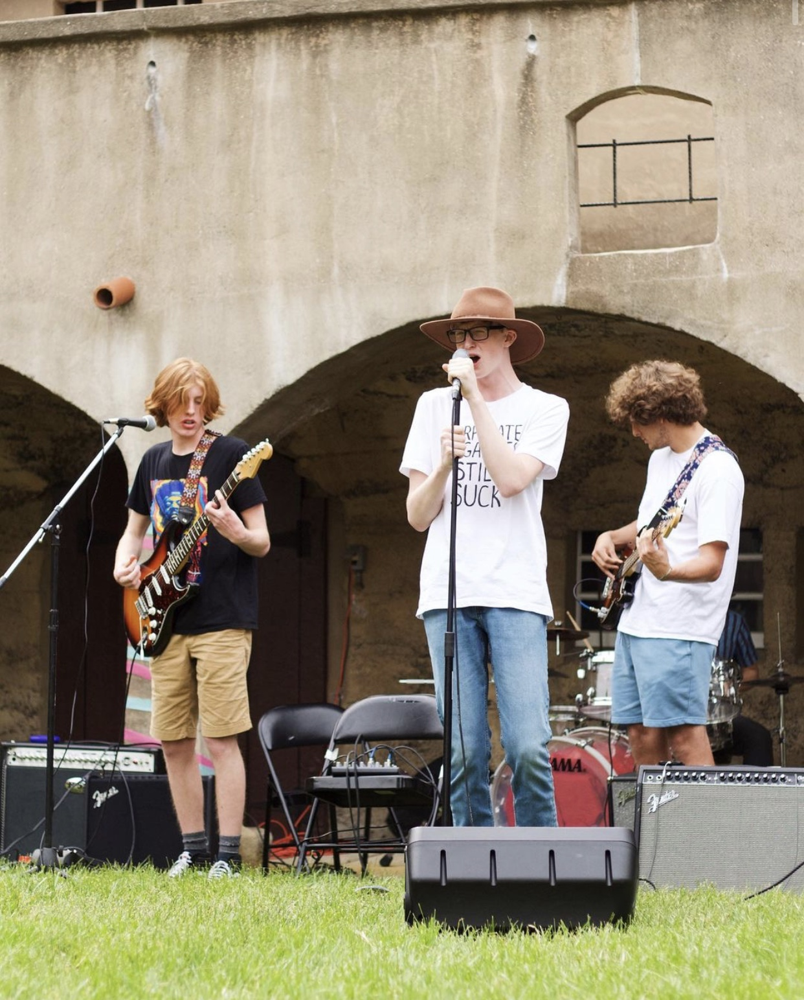
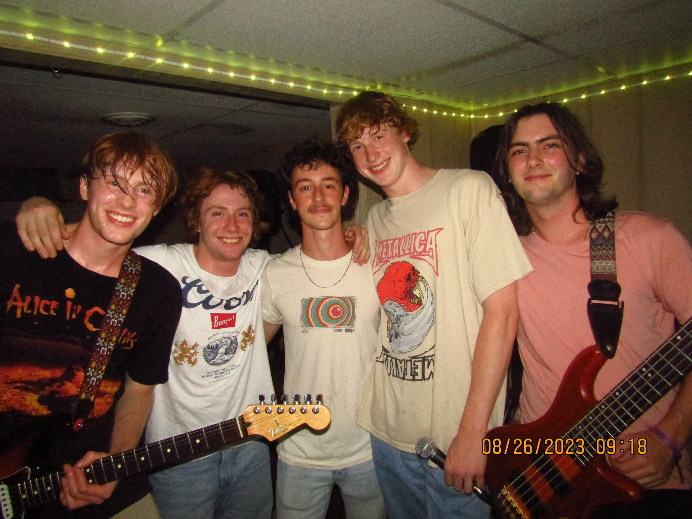
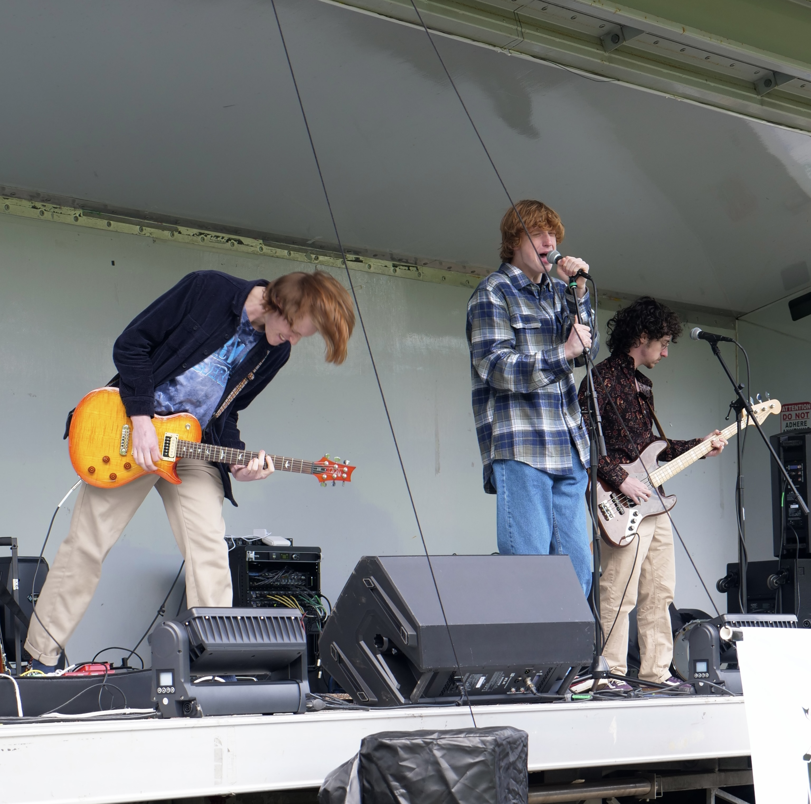
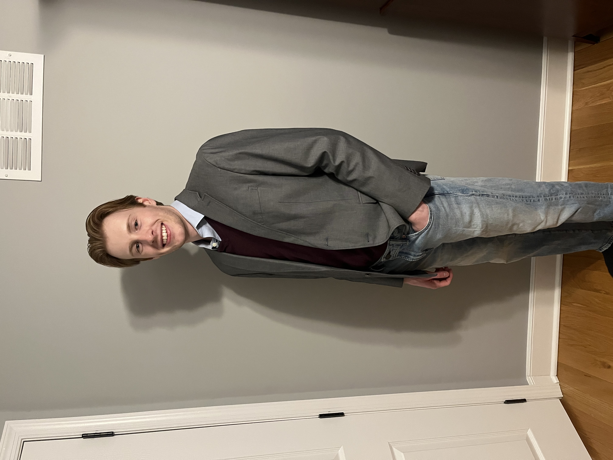
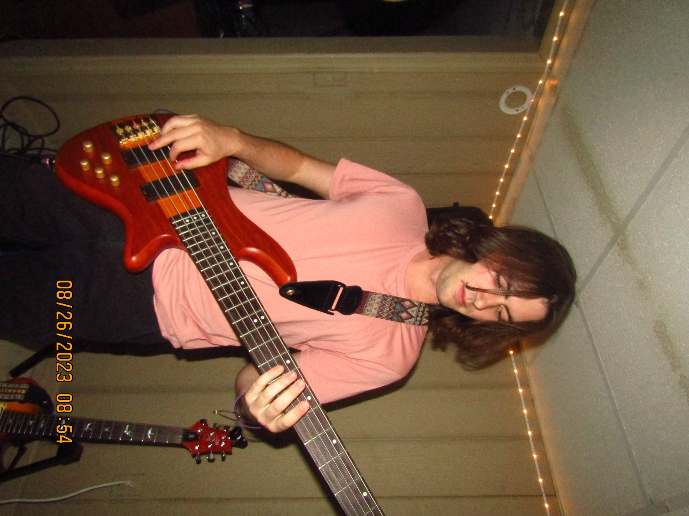
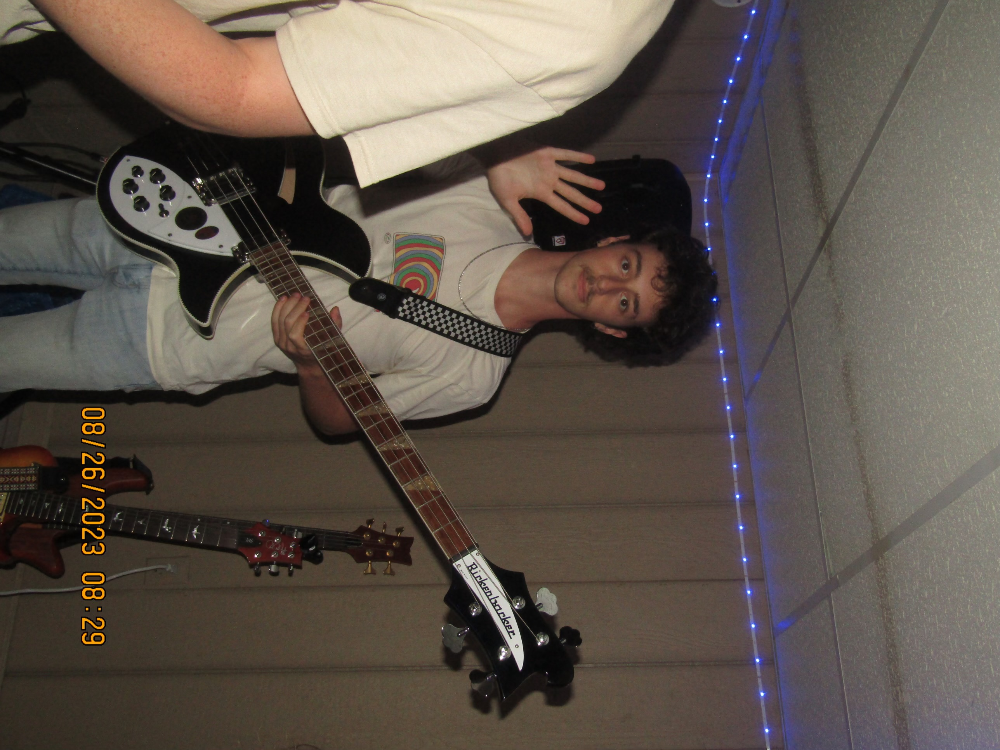
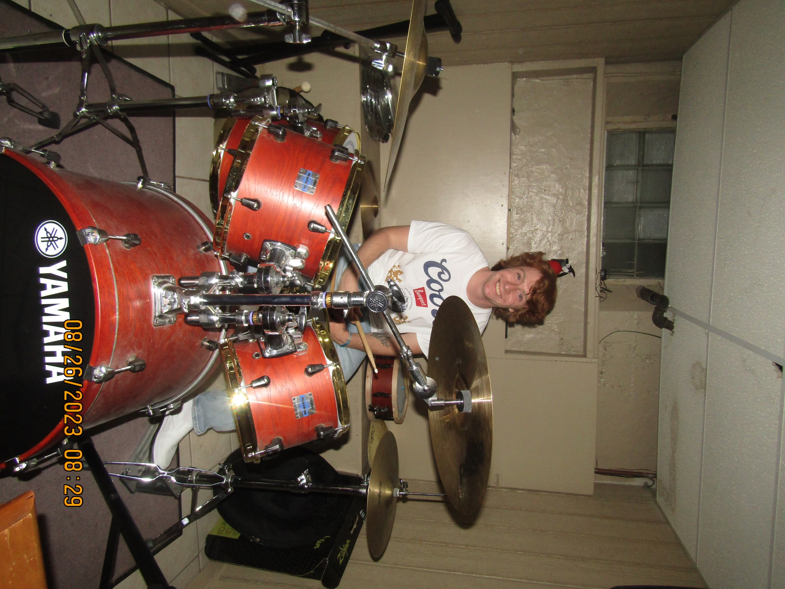
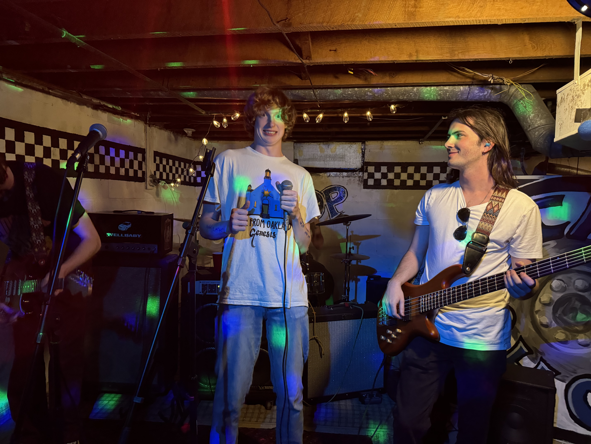

Our Story
Getaway Driver is an alternative rock band from the Pittsburgh region consisting of multi-instrumentalists Trevor Hough, Travis Mindel, Henry Edmunds, Will Berick, and Ethan Cope. The band first formed in Philadelphia with Travis as a guitar player and Trevor as a lead vocalist, until Travis enrolled to the University of Pittsburgh as a freshman. Here he met Henry Edmunds, a drummer and bassist, and Will Berick, a primarily-bass player who studies music at Carnegie Mellon University. Soon after meeting, they began making music together. During breaks between school, Travis would come home and jam with Trevor and Ethan (drums), and they too, began writing songs. Getaway Driver had not established a comfortable roster until things came full circle, with Trevor deciding to transfer to Pitt in late 2023. Since then, they have punched their way through the colorful music scene of Pittsburgh, attempting to make a name for themselves through energetic performances in basement shows and other venues.
In the all but inevitable mission to find a sonic identity, Getaway Driver is a shape-shifting band that constantly attempts to push their own boundaries and try on different hats. All the while, it is certainly apparent that home is where the heart is, as the band members grew up worshiping grunge gods such as Nirvana, and Alice In Chains. As one may find, the underlying themes on their first record, Discolored, certainly reside under the mucky, disdained, oblivion-driven attitudes one may find in grunge-music. Like a getaway driver, they are mobile. They are unkempt in one position, and habitually seek truth through another. Their music has the vibe of an escapist whom seeks a break from reality, combined with the haste of feeling chased. They are confident in their aptitudes, but modest of their role in the infinite soundscape of music. Each band member is eager to learn more about both music and life itself. Getaway Driver is the fruit of their personalities, and an interface for their growth as human beings in a complex world.
The Early Days

Despite not forming until mid 2023, Getaway Driver's roots go way back to 2021. While in their senior year of high school, Trevor and Travis began playing songs together. After getting comfortable with playing covers, the two decided to write their first song, Soon, which happens to be the last song on Discolored. They played their first show under the name, Sieze, playing only three songs. For the next two years, the two would collaborate with drummer, Ethan Cope in the off-months of school.
The First Year

The band as it stands now did not form until May 2023, when Travis, Trevor, and Ethan wanted to record a few songs they had written in the past two years. This is where Henry joined the mix. The four ended up recording Organized Chaos, Strange to me, and Soon in their first studio session. In the months after that, the band wrote and recorded the rest of Discolored while also playing their first shows in the general Pittsburgh area. This is where Will first joined the band as the bass player. Since then, he has continued to write, record, and perform with the band.
The Modern Era

Since the release of Discolored, Getaway Driver has continued to write, record, and perform. They are currently working on their second album release.
Members
Travis Mindel

Getaway Driver's unique style heavily draws from Travis Mindel’s guitar work. His riffs often encompasses rhythm and lead simultaneously, while also utilizing tasteful studio layering, and a cornucopia of otherworldly tones. He crafts sound like a painter mixing colors on a palette.
Henry Edmunds

Henry Edmunds, often referred to as the god of rhythm, possesses both the ability to write melodic bass-lines and crafty drum beats. Henry has a sly demeanor, but a nuanced musical approach; every note or pulse is used scarcely and with purpose.
Will Berick

Will Berick, who boasts an admirable repository of musical ability. While he plays bass for the band, he composes chamber music for his school, and can play a laundry list of different instruments, including bass, guitar, drums, piano, trumpet, etc. His musical influences come from movie and video game scores, which has a very interesting effect in a band setting.
Ethan Cope

Ethan Cope, who grew up alongside Trevor and Travis, brings brashness and unhinged power to the band through his percussion. He is a sneakily great singer with an impressive range. While he attends college far away from the others, he still manages to perform with them when possible, and has his own band called Skinny at University of Delaware. His drumsticks may be replaceable, but his presence in the band is not.
Trevor Hough

Last but not least, the songs are narrated through the perspectives of Trevor, as he uses song as a mean to portray emotional statements. He writes stories with his music, provides his unique and ever-changing perspective on the world around him. He uses his raw, baritone voice as a sabre of spirit and has a child-like nature of imitating the sounds he hears in the music he likes. Trevor is the temperament of Getaway Driver. Each band member has a respective contribution to the band, and it is with excitement that they continue their musical journeys.